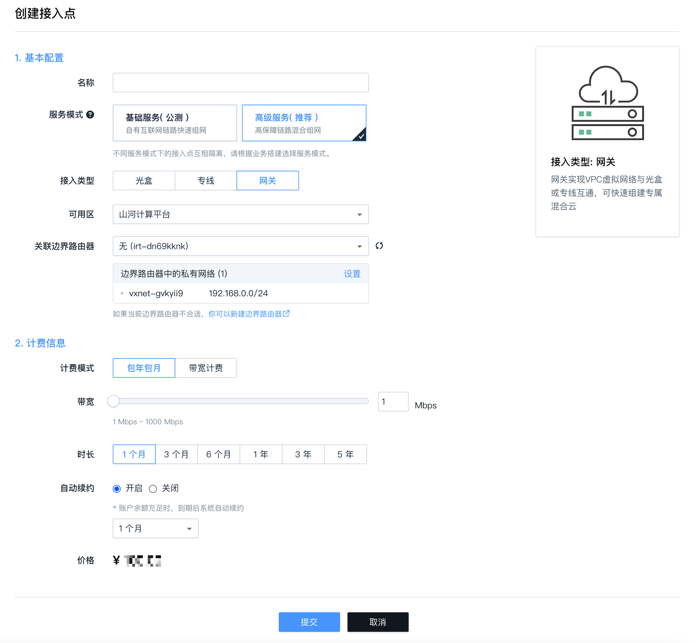

WAN 接入点
WAN 接入点，用于企业将不同类型的网络接入到 WAN 网, 目前支持三种 WAN 接入:
-
光盒: 允许用户网络通过光盒接入到 WAN 网
-
专线: 允许用户网络通过专线(支持 BGP 和静态路由两种方式)接入到 WAN 网
-
网关: 允许云平台内VPC或云服务器通过边界路由器接入到 WAN 网
创建光盒接入点
光盒允许您通过 Internet 快速接入 WAN 网。目前,该设备需要通过申请获得，具体步骤请参考 光盒申请。
您收到光盒后，把光盒插入电源，并将 Internet 链路插入光盒 WAN 口，然后登录 WEB 平台，在顶部的导航栏里搜索光盒，接着在右边区域点击创建接入点, 选择光盒类型并填入相应的信息即可。

注意：当您选择"手动开局"时，需要输入光盒序列号。光盒序列号在光盒背面可以找到, 格式类似: 1c2c997dfb81。
创建成功后, 在光盒页面, 可查看光盒的连接状态。
点击光盒接入点进入详情页，可进一步配置光盒，包括 LAN、WAN、静态路由、防火墙和 Wi-Fi。

光盒 LAN 配置
在光盒接入点详情页，点击管理配置中的LAN 配置，可设置光盒的 LAN 网段、网关地址以及是否启动 DHCP 服务。
注意：修改之后需要点击"应用修改"以生效。
光盒 WAN 配置
在光盒接入点详情页，点击管理配置中的WAN 配置，可配置光盒的 WAN 口，具体如下:
-
开启NAT: 是否启用 NAT 功能。NAT 功能用于将 LAN 口地址映射为 WAN 口地址，关闭后可能会影响网内您访问 Internet。
-
开启专线: 是否启用专线。当光盒通过专线接入WAN网时，需要开启该选项。
-
是否为 4G 接口: 用于标识接口是否为 4G 接口。控制器会针对 4G 接口进行流量优化。
-
MTU: 设置 MTU 的值, 默认为1500。
-
跟踪 IP: 用于检查网络是否通畅, 例如: 114.114.114.114。
-
优先级: 适用于有多个 WAN 口的光盒, 值越小，接口优先级越高。
-
权重: 适用于有多个 WAN 口的光盒，当优先级一样时，权重决定了负载均衡比例。
注意：修改之后需要点击"应用修改"以生效．
光盒静态路由配置
在光盒接入点详情页, 点击管理配置中的路由配置 > 静态路由，可配置光盒的静态路由。
注意：修改之后需要点击"应用修改"以生效．
光盒防火墙配置
在光盒接入点详情页，点击管理配置 > 安全配置 > 安全组，可配置光盒的防火墙规则。 您可以根据源 IP、源端口、目的 IP、目的端口、协议、方向等信息配置防火墙规则。 因为光盒可以同时接入互联网和WAN网, 所以防火墙规则的方向有四种:
-
IN-POP: 表示从 WAN 网到光盒的方向
-
OUT-POP: 表示从光盒到 WAN 网的方向
-
IN-Internet: 表示从 Internet 到光盒的方向
-
OUT-Internet: 表示从光盒到 Internet 的方向
注意：修改之后需要点击"应用修改"以生效．
光盒 Wi-Fi 配置
在光盒接入点详情页，点击管理配置 > 网络配置 > 无线配置，可设置光盒 Wi-Fi 所使用的频段、加密方式、频道、首选频带等。 首选频带用于标识优先使用的无线频段。
注意：修改之后需要点击"应用修改"以生效。
创建专线接入点
登录WEB 控制台，点击顶部导航栏中的专线，接着在右边区域点击创建接入点，选择专线类型并填入相应的信息即可。
创建好的专线接入点，状态是审核中。当完成审核、专线链路施工后，您才可以进行路由配置。目前支持 BGP 和静态路由两种方式。
注意：对于BGP和静态路由两种方式, 在配置前请慎重选择, 一旦配置不可切换。
BGP
采用 BGP 方式, 需要指定用户侧 BGP 的 AS 号。
用户侧 BGP 的 AS 号可以根据需要来修改，修改后需要点击应用修改以生效。
静态路由
采用静态路由方式，需要指定静态路由。可以根据需要指定一条或多条静态路由。
配置完后，可以在接入点详情页里修改静态路由，修改后需要点击应用修改以生效。
创建网关接入点
网关接入点用于将云平台服务器接入到 WAN 网。在创建网关接入点之前，需要创建并配置边界路由器，具体如下:
-
登录控制台后，搜索边界路由器，在右侧点击创建即可创建边界路由器。详细操作可参考边界路由器操作指南。
-
在边界路由器详情页, 点击关联 VPC 私有网络，将私有网络关联到内网路由器。详细操作可参考边界路由器操作指南。
-
在内网路由器详情页，点击路由设置，进入到内网路由策略配置页面，设置内网路由策略。详细操作可参考边界路由器操作指南。
注意： 1. 内网路由策略中的边界路由器类型选物理内网路由器。 2. 设置好内网路由策略后,需要点击"应用修改"以生效。
边界路由器配置好后，在顶部导航栏搜索企业云网，在左侧下面选择网关，点击创建接入点，选择网关类型，并选择配置好的内网路由器，然后填入相应信息即可创建网关接入点。

注意:
1. 因内网路由器是双线接入 WAN 网, 网关接入点的最大可用带宽是上图中设定带宽的两倍。
弹性带宽
光盒接入点和网关接入点，在创建时需要指定包年包月的固定带宽。创建完成之后，还可以弹性调整弹性带宽。 弹性带宽按秒计费，带宽最大值不能超过固定带宽。接入点的实际带宽值等于固定带宽和弹性带宽两者之和。

注意：
1. 在接入点合约到期时, 弹性带宽会自动变为 0, 合约续约成功后需手动设置弹性带宽。
2. 云帐号欠费时, 固定带宽不受影响, 但弹性带宽会变为 0, 充值后弹性带宽会自动恢复。